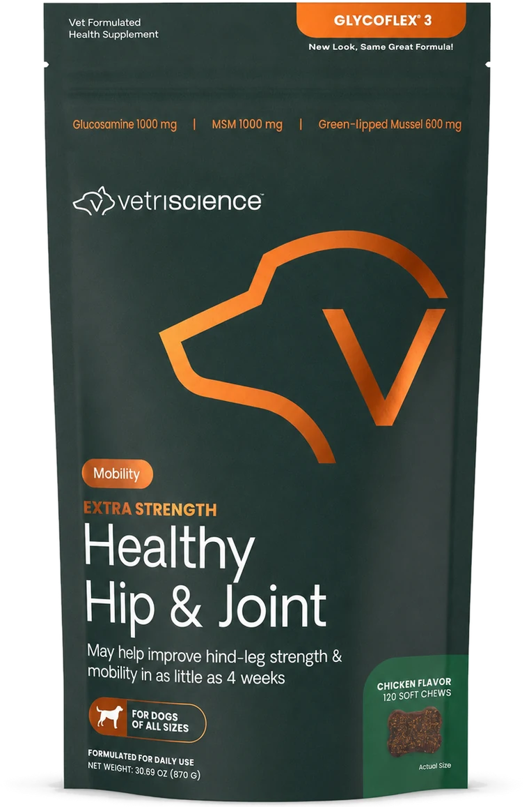
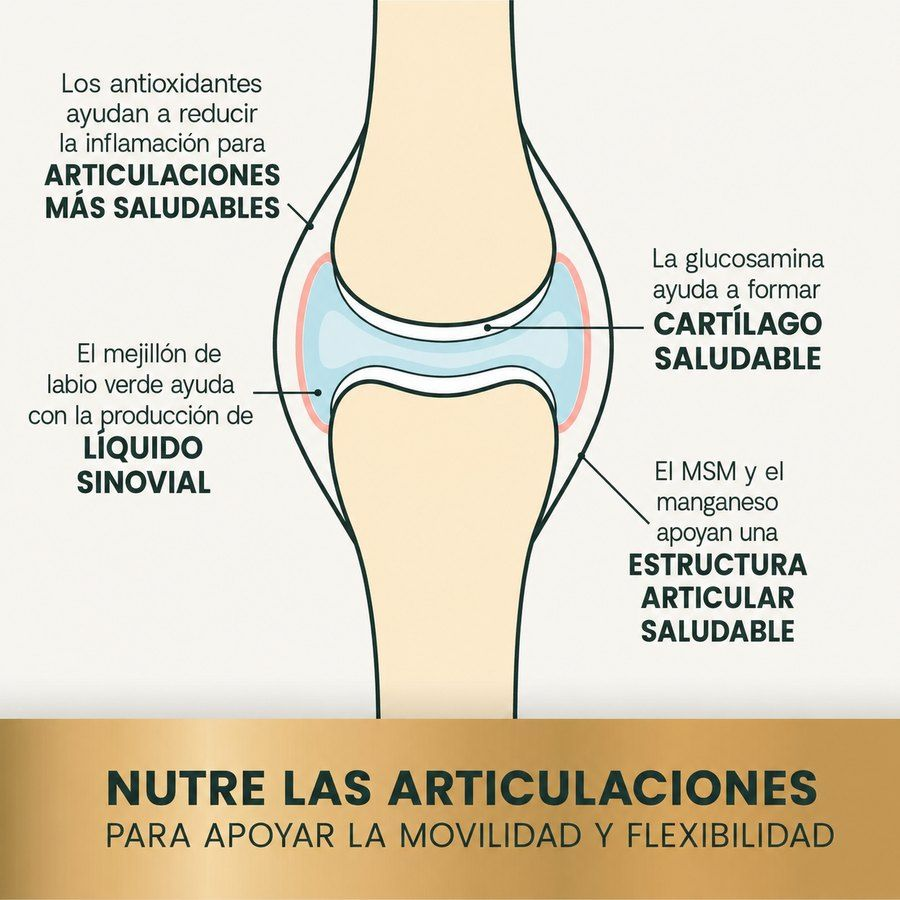
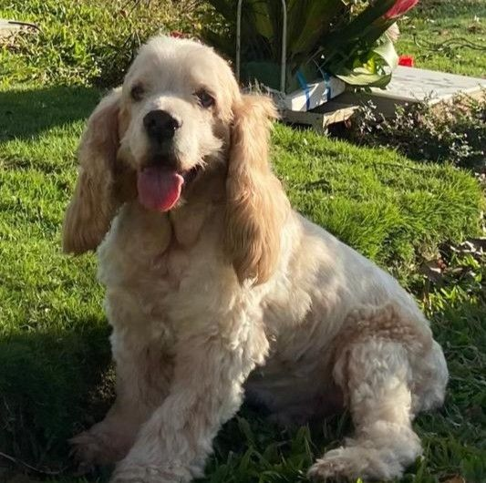
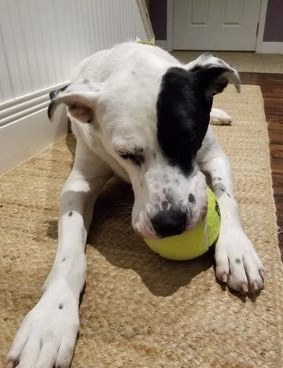

GlycoFlex 3 · Fórmula reforzada
Apoyo nutricional para las caderas y articulaciones de tu perro
VetriScience GlycoFlex 3. Son 120 premios masticables con sabor a pollo, con glucosamina, MSM y mejillón de labio verde.
- 120 premios masticables
- Sabor a pollo
- Perros de todos los tamaños
Envío incluido · Pago con PSE, Nequi y tarjetas

Empecemos por aquí
¿Reconoces alguna de estas señales?
Marca las que veas en casa. Si son dos o más, tu perro ya pasó la etapa de prevención, y GlycoFlex 3 está pensado justo para ese momento.
VetriScience Laboratories · Vermont, EE.UU.
GlycoFlex 3
120 premios masticables con sabor a pollo que la mayoría de perros recibe como si fuera una galleta cualquiera.
- Fórmula reforzada: 1000 mg de glucosamina, 1000 mg de MSM y 600 mg de mejillón de labio verde por cada 2 premios.
- Se da como un premio, no como una pastilla. La mayoría lo acepta directo de la mano.
- Sirve para perros de todos los tamaños: solo cambia la cantidad diaria según el peso.
$249.900
Bolsa de 120 premios · 870 g · Envío incluido a Bucaramanga y principales ciudades
Desde $1.262 al día para un perro de hasta 13 kg
Pago seguro con Wompi · Bancolombia, PSE, Nequi y tarjetas
Antes de comprar: las primeras 4 a 6 semanas se da una dosis inicial más alta. Es normal y viene indicado en el empaque. Más abajo hay una calculadora que te dice cuánto te va a durar según el peso de tu perro.
Lo que trae adentro
Qué lleva y para qué sirve cada cosa
Esto es lo que trae cada 2 premios. Son las cantidades reales impresas en el empaque.
1000mg
Glucosamina HCl
Nutriente clave para construir y mantener el cartílago articular. Proviene de camarón y cangrejo, fuentes que el cuerpo absorbe mejor que la glucosamina sintética.
1000mg
MSM (Metilsulfonilmetano)
Compuesto de azufre presente de forma natural en el cuerpo del perro. Sostiene la estructura de las articulaciones y el tejido conectivo, e interviene en la síntesis de colágeno.
600mg
Mejillón de labio verde GlycOmega™
Perna canaliculus de Nueva Zelanda. Alimento entero que aporta glucosamina natural, ácido hialurónico, antioxidantes y omega 3 en un solo ingrediente. Es la base de la fórmula.
100mg
DMG (Dimetilglicina)
Apoya el confort y el desempeño general del perro respaldando la circulación sanguínea, el uso eficiente del oxígeno y los niveles de energía.
10mg
Manganeso
Mineral necesario para la formación de colágeno, que a su vez determina la estructura e integridad del cartílago.
Vit. E y C · Se · Uva
Complejo antioxidante
Vitaminas E y C, selenio, glutatión y extracto de semilla de uva (Vitis vinifera) para neutralizar radicales libres y apoyar el flujo sanguíneo hacia la articulación.
La razón más común por la que un dueño no ve cambios es suspender antes de tiempo.
Material del fabricante
Qué pasa dentro de la articulación
Cada ingrediente actúa sobre una parte distinta de la articulación. Esto es lo que ocurre adentro mientras tu perro recibe su premio diario.
Esta ilustración es material gráfico producido por VetriScience Laboratories, el fabricante. La reproducimos tal cual; las afirmaciones que aparecen en ella son del fabricante, no de FortePet.

Calculadora
¿Cuánto le doy y cuánto me dura?
Escribe cuánto pesa tu perro y te decimos la dosis, cuántos días te alcanza la bolsa y cuánto te cuesta al día.
El cálculo incluye las primeras 6 semanas de dosis inicial más alta y después la de mantenimiento, tal como viene en el empaque.
Dosis
2premios al día las primeras 6 semanas · luego 1 al día
Te dura
78días con una bolsa de 120 premios
Costo por día
$3.204envío incluido
Cómo se lo das
Tabla de dosis del empaque
Son premios masticables con sabor a pollo que la mayoría de perros acepta directo de la mano. Dáselos durante o después de la comida para reducir el riesgo de molestia estomacal. Si le toca más de uno al día, reparte entre la mañana y la noche.
| Peso del perro | Primeras 4 a 6 semanas | Mantenimiento |
|---|---|---|
| Hasta 30 lbs (13 kg) | 1 premio al día | 1 premio cada dos días |
| De 31 a 60 lbs (14 a 27 kg) | 2 premios al día | 1 premio al día |
| De 61 a 100 lbs (28 a 45 kg) | 4 premios al día | 2 premios al día |
| Más de 100 lbs (46 kg en adelante) | 5 premios al día | 3 premios al día |
Cuánto te dura la bolsa de 120 premios: un perro de 14 a 27 kg cubre la fase inicial completa y varias semanas más, cerca de dos meses y medio. Uno de 28 a 45 kg la consume en aproximadamente un mes durante la fase inicial. Calcula tu recompra desde el primer pedido para no interrumpir.
Los resultados no son inmediatos. La fase inicial de 4 a 6 semanas existe porque la articulación necesita ese tiempo para responder.
Lo que nos han escrito
Opiniones de clientes
«Ahora se mueve con más confianza y ya no lo veo tan incómodo cuando sale al patio.»
Mi cocker ya tiene 13 años y pensé que la cojera era simplemente parte de la edad. Había días en los que se levantaba muy despacio y le costaba arrancar a caminar. Empezamos a darle este suplemento por recomendación de un amigo y, aunque al principio no esperaba mucho, sí he notado diferencia. Para nosotros ha sido una muy buena ayuda.

«Mi perro es un gran danés mestizo y desde joven empezó a tener problemas en las articulaciones. Lo que más me preocupaba era verlo quedarse mirando mientras los otros perros jugaban. Después de varios meses usando este suplemento volvió a correr detrás de las pelotas. Sigue teniendo sus limitaciones, claro, pero verlo activo otra vez no tiene precio.»

«Muy buen producto, funciona.»
«Excelente, los acepta como galletas.»
«Gracias por ofrecer estos productos, muy buenos.»
¿Dudas antes de pedir?
Escríbenos, contestamos nosotros
No hace falta que compres para preguntar. Cuéntanos el caso de tu perro y te decimos si esta fórmula aplica.
- Envío a todo Colombia
- PSE, Nequi y tarjetas
- Producto original importado
- Asesoría por WhatsApp